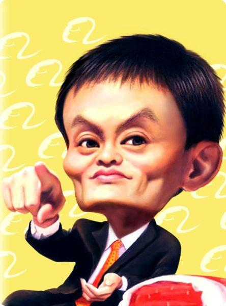

|
 Jack Ma In 1995, Ma founded China Pages, widely believed to be China's first Internet-based company. From 1998 to 1999, Ma headed an information technology company established by the China International Electronic Commerce Center, a department of Ministry of Foreign Trade and Economic Cooperation. He founded Alibaba.com in 1999, a China-based business-to-business marketplace site which serves more than 65 million members from more than 240 countries and territories. Ma now serves as chairman and CEO of Alibaba Group, which is a holding company with four major subsidiaries – Alibaba.com, Taobao, Alibaba Cloud Computing and China Yahoo!. |